AI Academy · Level 1 · Grade 6 · Week 7 · Student lesson
Categories and Labels
Learn to understand, design, build, test and explain AI systems responsibly.
Project: Helpful Classroom Sorter
Before you start
Week 4: a rule must specify how unfamiliar cases are handled.
Plan time to read, investigate and explain. Keep predictions separate from observations.
Student lesson · 1 of 14
Your mission
Your learning target
I can apply a category definition using explicit evidence and boundary rules.
I can distinguish a known failure from information that is missing or unreadable.
I can use disagreement to improve a labelling guide without mistaking agreement for truth.
Remember before reading
Close your notes first. A rough first answer helps us choose the right starting point; it is not a score for your ability.
Without opening the old lesson, explain one key idea from Sound Becomes a Signal. Give an example and a mistake that the idea helps you avoid.
Without opening the old lesson, explain one key idea from Rules or Learned Patterns?. Give an example and a mistake that the idea helps you avoid.
Without opening the old lesson, explain one key idea from AI or Not?. Give an example and a mistake that the idea helps you avoid.
After trying, check the relevant lesson or ask your teacher. Change the part of your explanation that the evidence shows was wrong.
Labels are human choices that may overlap or be unclear.
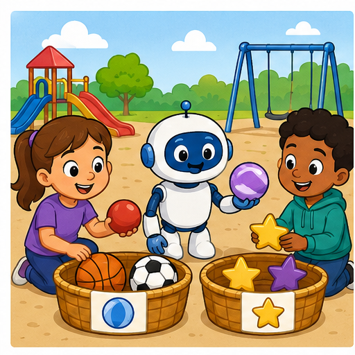
Learner name:
Readiness for the connected explanation
A transcript leaves out an unclear word. Why should a later system not simply treat that missing word as a known value?
This week’s end goal
By the end, I can apply a shared labelling policy consistently, including missing information.
Student lesson · 2 of 14
Notice the evidence
PICTURE STORY
Look Closely Before You Explain
Pictures give clues; evidence tells us what the clues mean.

What do you notice?
Name three visible details without explaining them yet.
Circle the detail most connected to the system's decision.
Name one detail that may be decoration or distraction.
Make a first prediction and state the clue that supports it.
My observations, prediction, and evidence:
A closer explanation
Two students are sorting fictional event cards for a classroom calendar. Their first instruction is Put the good cards together. Mina calls a colourful card good. Theo calls a plain card good because its room is easy to read. They disagree even though both followed a reasonable interpretation of the word good.
A category is useful for a task when people can tell what evidence makes an example belong to it. An operational definition states the observations or checks to perform. For this paper exercise, we will check two printed fields: an event day and a room code. The task is to check the record against a classroom policy, not to judge the quality of the event or the person who wrote it.
Labels depend on the definition in use. A model fitted to labels can learn the distinctions those labels encode, including mistakes and inconsistencies. Before asking a model to copy a label, ask whether people have a clear, useful guide for assigning it.
Student lesson · 3 of 14
See how it works
VISUAL MECHANISM
Input → Process → Output
Follow the information instead of imagining magic inside the machine.
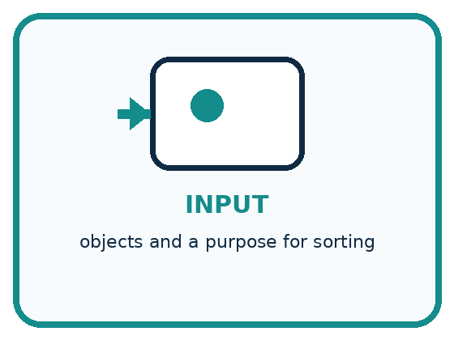
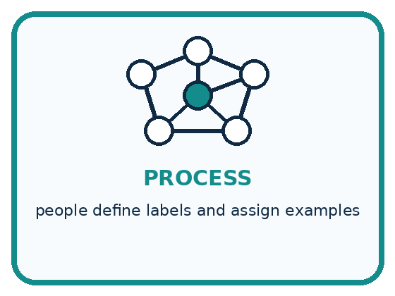
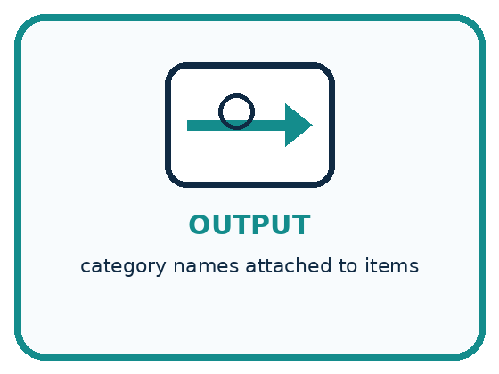
INPUT objects and a purpose for sorting
PROCESS people define labels and assign examples
OUTPUT category names attached to items
Draw a fresh example with all three stages:
A closer explanation
Our fictional calendar accepts a whole-number day from 1 through 30, including both endpoints, and exactly one room code, A or B. The month is already fixed for this exercise. A blank or unreadable field counts as unknown. The categories are revise, review and ready. Use the checks in the order shown.
Three ordered checks for a calendar card
Known failure and unknown are different. Day 31 is known and outside the accepted range, so the card needs revision. An unreadable day might be valid or invalid; without another known failure, it needs review. Never silently turn a blank into zero just to make a comparison possible.
Connect the picture and the explanation
Point to the input, the deciding step and the result in this week’s visual. Explain the same step in ordinary words. A picture helps when you can say what each part represents.
Student lesson · 4 of 14
Compare the cases
PICTURE GALLERY
Four Cases, Four Clues
Use the visual cue, then read the evidence carefully.
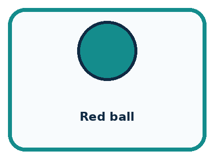
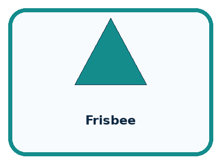
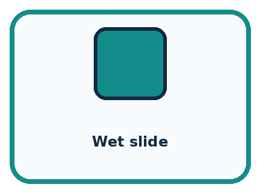
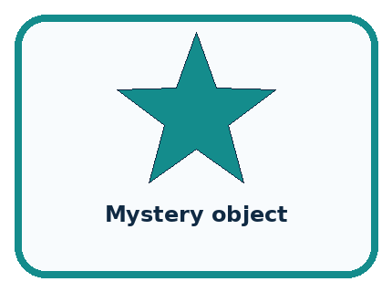
CASE 1 — Red ball Clue: red and round. Meaning: multiple descriptive labels.
CASE 2 — Frisbee Clue: toy or sports equipment. Meaning: purpose changes label.
CASE 3 — Wet slide Clue: equipment and possible hazard. Meaning: context matters.
CASE 4 — Mystery object Clue: insufficient features. Meaning: need more information.
Which two pictures are easiest to confuse? What evidence separates them?
Change one thing in the pictured case
Change: Change B’s quantity from 5 to 4; leave colour blank.
Prediction: B becomes review.
Reason: The known failure is removed, but a required field is still missing.
Student lesson · 5 of 14
Words that unlock the idea
VOCABULARY
Words You Can See and Use
The badge is a memory cue; the definition does the real thinking work.
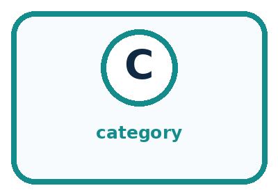
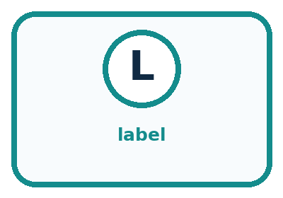
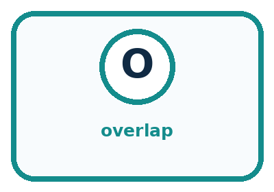
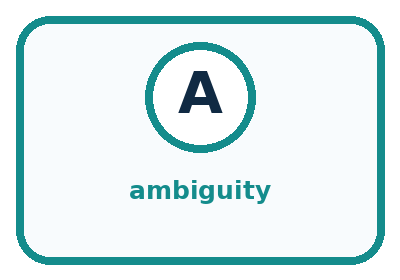
| Word | Meaning | My example |
|---|---|---|
| category | group created for a purpose | |
| label | name assigned to an example | |
| overlap | when more than one label can fit | |
| ambiguity | when evidence allows multiple reasonable meanings |
Misconception detective
CLAIM TO REPAIR Every object has exactly one correct label.
Use one vocabulary word and one piece of evidence to repair it:
Words used in the closer explanation
| Word | Meaning |
|---|---|
| Operational definition | A definition precise enough to tell someone what to observe or do when assigning a category |
| Annotator | A person who assigns labels to examples |
| Disagreement | A case where annotators assign different labels to the same example |
Student lesson · 6 of 14
Follow a worked example
WORKED EXAMPLE
Watch the Reasoning, Not Just the Answer
Every step connects a claim to observable evidence.

STEP 1 — OBSERVE objects and a purpose for sorting
STEP 2 — TRACE people define labels and assign examples
STEP 3 — CONCLUDE category names attached to items
What new evidence could change this answer?
A closer explanation
| Card fields | Relevant evidence | Label and reason |
|---|---|---|
| Day 12 room A | Both values satisfy the criteria | Ready because both checks pass |
| Day 31 room A | 31 is outside 1 through 30 | Revise because a known value fails |
| Day 12 room unreadable | No known failure but the room is unknown | Review until the room is checked |
| Day 31 room unreadable | The day already fails although the room is unknown | Revise because the first check has priority |
For the last card, first read only what is known: day 31. Compare it with the allowed range and record a failure. The guide therefore selects revise before the missing-room check. Checking the room later could reveal another problem, but it cannot make day 31 satisfy this policy.
A clear explanation cites the particular criterion. Saying It looks wrong is not enough. Write Day 31 exceeds the accepted maximum of 30 instead. That explanation lets another person reproduce the check and challenge it if the recorded value or policy is different.
Learn from the worked case
Cover the result before checking it. Say what is given, choose the procedure, and follow one step at a time. Then uncover the result and explain your first mismatch. Ask why a step is allowed, not only what number it produces.
A pictorial worked case: Categories and Labels
A fictional craft club labels cardboard-order cards ready, review or revise.
The facts we will use
Allowed quantity: whole number 1–4. Required colour: red or blue.
If any known field fails, revise; otherwise if a required field is blank, review; otherwise ready. Cards A=(4,red), B=(5,blank), C=(2,blank).

Read the picture one step at a time
Why this result follows
Operational labels specify what a word means for this task. Two labellers using the same priority should agree on these cards. Review describes missing evidence, not a hidden assumption that the card is wrong. Revise is supported by a known failure.
What this example does not establish
Agreement between labellers does not prove this policy is suitable for every school or that labels are objective truths.
Student lesson · 7 of 14
Find and repair a mistake
COMPARE
Same Result, Different Reason
A comparison helps reveal the true concept boundary.
| Case | Evidence | What it shows |
|---|---|---|
| Red ball | red and round | multiple descriptive labels |
| Frisbee | toy or sports equipment | purpose changes label |
| Wet slide | equipment and possible hazard | context matters |
| Mystery object | insufficient features | need more information |
Repair two tempting claims
CLAIM A Every object has exactly one correct label.
Repair:
CLAIM B Disagreement proves one person was careless.
Repair:
A closer explanation
If two annotators agree on four of six cards, we know that four assigned labels matched. We do not yet know whether those labels followed the guide. Both annotators might have made the same mistake. Check their reasoning against the criteria and, where necessary, the source record.
Even perfect agreement under our calendar policy would not prove that the room is really booked. It would only show agreement about whether the printed fields pass the specified checks. The policy itself may need changes for a real calendar. Record the policy version so examples labelled under different instructions are not mixed without review.
Student lesson · 8 of 14
Practise together
GUIDED PRACTICE
Try It, Check It, Explain It
Use support now so you can succeed independently later.

Explain how the picture story demonstrates this idea: Labels are human choices that may overlap or be unclear.
Use a fresh example to explain category.
Trace a new input → process → output example.
Find and repair the error in: Disagreement proves one person was careless.
Invent one edge case and name the safe response.
A closer explanation
Mina labels day 30, room B as ready; Theo labels it revise because he thought the range stopped before 30. The disagreement points to a boundary interpretation. The guide says including both endpoints, so 30 passes. The appropriate repair is to clarify and practise the inclusive boundary, not to change the label merely because one student is more confident.
Ask annotators to label examples independently before comparing. If they copy one another, agreement no longer tells us whether the guide can be applied independently. Keep the original labels and reasons when discussing differences, then record any corrected labels separately.
Practise with less help: Replace a vague instruction
Use workbook W2 for the connected example “Categories and operational labels”. First fill the input and rule boxes. Try the middle steps before asking for a hint. After a hint, try the next step yourself.
| Plan | Do | Check |
|---|---|---|
| What is given? Which rule or procedure applies? | Record each intermediate step. | Does the result follow? What remains unknown? |
Explain your trace to a partner. Your partner points to one step to check. Swap roles on the next case. Each person writes their own explanation.
Check your reasoning
Use the worked case for Categories and operational labels. Proposed explanation: “A blank is the same as a failing value”. Decide whether this explanation is supported. Point to the step or supplied fact that decides; explain your repair if needed.
Answer on your own before discussion. If you are unsure, say which step you need help with.
Explain the picture
Explain why B originally was revise rather than review, then label its changed version.
This is supported practice. Keep the separately named independent case for an attempt before feedback.
Student lesson · 9 of 14
Run the investigation
EXPLORER LAB
Playground Label Council
Predict first, test honestly, and explain what the evidence means.

State your prediction before the result is known.
Complete the task: Design labels for playground objects; challenge ambiguous cards.
Keep a normal case and an edge case clearly separated.
Record what happened—even when it does not match your prediction.
Explain the result, one limitation, and the next useful test.
| Case | Prediction | Observed result | What it means |
|---|---|---|---|
| Normal | |||
| Edge |
Plan → try → check
Before trying: what do I expect, and why? While trying: which step could first go wrong? Afterwards: what did I actually observe, and what should change? Keep “not run” if you only traced the procedure.
Student lesson · 10 of 14
Build your understanding
PRACTICE LADDER
Climb from Recall to Defense
Each step asks for a stronger kind of understanding.

RECALL Define category.
EXPLAIN Labels are human choices that may overlap or be unclear.
TRACE Show the input, process, and output.
DIAGNOSE Repair: Every object has exactly one correct label.
TRANSFER Apply the idea to a new home or classroom case.
CREATE Design one revealing test.
DEFEND Give a claim, evidence, mechanism, limit, and safe action.
Student lesson · 11 of 14
Connect your project
PROJECT
Helpful Classroom Sorter
Build one coherent system across the year, one evidence-based decision at a time.

What real classroom need does this serve?
What information is necessary—and what should stay private?
What happens inside the process?
What normal and edge cases will you test?
When should it say not sure or ask a person?

My project decision:
Evidence for your project
Write a sorter label guide with examples of complete, invalid and unresolved inputs before comparing labels.
Student lesson · 12 of 14
Show what you know
MASTERY
Fresh-Case Independent Proof
Complete this after teaching and guided practice have ended.

□ Name or draw the fresh case.
□ Trace input, process, and output.
□ State the conclusion and strongest evidence.
□ Name one limit, failure, missing clue, or fairness/privacy concern.
□ Explain one safe next action or improvement.
Independent evidence:
My level: □ Not yet □ With one hint □ Independently □ I can teach it
Student lesson · 13 of 14
Study a complete case
Week 7 Worked case
Use the supplied details to practise the weekly concept before attempting the independent question. This case extends the illustrated lesson.
The situation
Six cards show two circles, two triangles and two squares. Sort by shape.
The question
Why can red and blue circles share a label?
Worked explanation
Both meet the circle definition. Colour does not change the agreed shape label. Apply one definition consistently.
Explain it in your own words
Which detail supports the answer, and why does it matter?
Trace the supplied case visually
Use the same label rule for every card
| Evidence or stage | Value or result |
|---|---|
| Circles | 2 |
| Triangles | 2 |
| Squares | 2 |
Six cards show two circles, two triangles and two squares. Sort by shape.
Why can red and blue circles share a label?
Both meet the circle definition. Colour does not change the agreed shape label. Apply one definition consistently.
Student lesson · 14 of 14
Try a new case independently
Independent case: Transfer the method to a new record
A fictional equipment-request form accepts a whole-number borrowing duration of 1 through 7 days inclusive and one item code X or Y. Label revise if any known field fails; otherwise label review if a field is blank or unreadable; otherwise label ready. Classify these forms and justify each: 7 days X; 8 days Y; unreadable duration X; 8 days blank code. Explain whether ready alone grants permission to borrow.
Attempt this case before feedback. Record any help. Earlier examples below are further practice; a case already practised with feedback cannot establish fresh transfer.
Week 7 Independent application
Close the worked explanation. Apply the idea to this different question without copying.
The rule is: fruit has seeds; other objects go in other. Sort an apple, a pencil and a sealed mystery box. Which item needs more evidence, and why?
My answer, with a trace, calculation or supporting evidence
Create and test
Change one relevant detail. Predict the result before testing. Include a boundary or missing-information case when it helps reveal a limit.
My changed input and expected result
Connect to your project
Define the Classroom Sorter's bin labels and write how to handle objects that reasonably fit more than one bin.
The evidence I will keep
Your teacher has the independent answer and scoring criteria. Complete the matching workbook week to keep your practice evidence together.
Transfer practice from the original programme
Your dataset labels 'reusable containers'. One team includes a disposable bottle reused once; another excludes it. Give an operational label rule and classify this boundary case under that rule. Explain why a different rule could be defensible.
Use feedback to improve
Attempt the independent case before hints. Record whether you worked alone, used a hint or followed a model. After feedback, fix the first unsupported step and explain why it changed. A later check uses a changed case, not a copied answer.